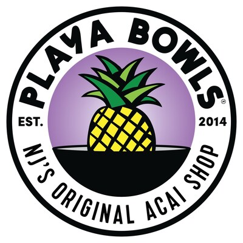

Playa Bowls
 Playa Bowls linkPlaya Bowls is looking to hire someone who can make videos, edit, and even manage their posts on social media. Like I have stated before I have been doing social media for years, and editing is a great passion of mine that I could utilize in this job. I also have a certification with Adobe editing which also makes me more qualified for a job like this.
Makeready
Makeready linkThis job requires someone who can execute digital marketing strategies, and as someone who is well skilled with social media and ad campaign strategies. I took classes for when it comes to ad campaigns so I have a decent knowledge of the material and think I could utilize what I know in this job. I am sure this company wants someone who can promote their company through digital marketing strategies and I know I would be good at it. Mostly due to the fact that I have taken classes regarding what they are looking for and feel confident in my abilites.
PawHootz Pet Resort
 PawHootz link
PawHootz link I feel like I would be good at this job, because the resort wants you to take videos and edit them for the animals. I am good when it comes to making and editing videos since I have made videos go viral before due to being skilled in editing and video making. It is clear they want to show on their social media pages that they take care of the animals well, which I could easily edit and make videos for.